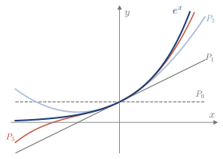
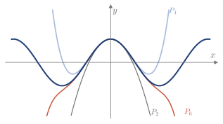
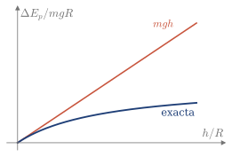
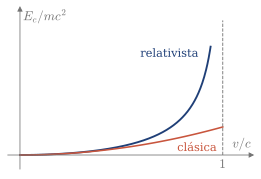
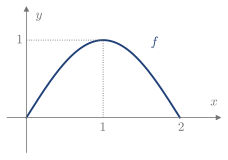
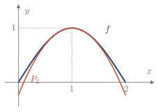

4.8 Polinomio de Taylor
Cerca de un punto, una función se puede sustituir por un polinomio, que es fácil de evaluar y de derivar.
Polinomio de Taylor
El polinomio se construye grado a grado, de forma que cada uno comparta con f en x=a una derivada más que el anterior: \begin{array}{c|c|l} \text{grado} & \text{condición nueva} & \text{polinomio}\\ \hline 0 & P_0(a)=f(a) & P_0(x)=f(a)\\[2pt] 1 & P_1'(a)=f'(a) & P_1(x)=f(a)+f'(a)(x-a)\\[2pt] 2 & P_2''(a)=f''(a) & P_2(x)=f(a)+f'(a)(x-a)+\dfrac{f''(a)}{2}(x-a)^2 \end{array} P_0 es una recta horizontal y P_1 es la recta tangente. El 2 del denominador aparece porque la derivada segunda de (x-a)^2 es 2. En general, la derivada k-ésima de (x-a)^k es k!.
Definición 4.6
Si f es n veces derivable en x=a, su polinomio de Taylor de grado n en a es P_n(x)=f(a)+f'(a)(x-a)+\frac{f''(a)}{2!}(x-a)^2+\dots+\frac{f^{(n)}(a)}{n!}(x-a)^n=\sum_{k=0}^{n}\frac{f^{(k)}(a)}{k!}(x-a)^k. Si a=0, se llama polinomio de Maclaurin.
Ejemplo 4.21
Calcular el polinomio de Maclaurin de grado n de f(x)=e^x y usar P_3 para aproximar e^{0.5}.
Todas las derivadas de e^x son e^x, así que f^{(k)}(0)=1 para todo k: P_n(x)=1+x+\frac{x^2}{2!}+\frac{x^3}{3!}+\dots+\frac{x^n}{n!}. Con n=3, P_3(0.5)=1+0.5+0.125+0.0208\ldots\approx1.6458. La calculadora da e^{0.5}\approx1.6487.
Cuanto mayor es el grado, más lejos de x=0 se pega el polinomio a la función (Figura 4.22).

Figura 4.22. e^x y sus polinomios P_0, P_1, P_2 y P_3.
Demo en GeoGebra
Sube el grado del polinomio y observa hasta dónde se parece a la función.
Abrir la demo Autoría: Doug Kuhlmann
Polinomios de Maclaurin conocidos
Las derivadas de \cos x en x=0 se repiten: 1,0,-1,0,\dots Por eso, solo quedan las potencias pares, con signos alternos. Con \sin x pasa lo mismo, con las impares (Figura 4.23).
Recuerda: polinomios de Maclaurin
e^x\approx1+x+\frac{x^2}{2!}+\frac{x^3}{3!}+\dots+\frac{x^n}{n!} \cos x\approx1-\frac{x^2}{2!}+\frac{x^4}{4!}-\dots+\frac{(-1)^nx^{2n}}{(2n)!} \sin x\approx x-\frac{x^3}{3!}+\frac{x^5}{5!}-\dots+\frac{(-1)^nx^{2n+1}}{(2n+1)!}

Figura 4.23. \cos x y sus polinomios de grado 2, 4 y 6.
Teorías físicas en un caso límite
Una teoría física más general suele contener a otra más sencilla como caso límite. El polinomio de Taylor muestra cómo la primera tiende a la segunda.
Ejemplo 4.22
La energía potencial gravitatoria de una masa m a una altura h sobre la Tierra, de masa M y radio R, es E_p(h)=-\frac{GMm}{R+h}. Ver a qué se reduce la diferencia \Delta E_p=E_p(h)-E_p(0) si h\ll R.
Se usa el polinomio de Taylor de grado 1 en h=0. Como E_p'(h)=\dfrac{GMm}{(R+h)^2}, \Delta E_p\approx E_p'(0)\,h=m\,\frac{GM}{R^2}\,h=mgh,\qquad g=\frac{GM}{R^2}. Es la fórmula habitual cerca del suelo. La fórmula exacta es \Delta E_p=\dfrac{mgh}{1+h/R}, así que a 10 km de altura, con R\approx6370 km, la diferencia es de un 0.16% (Figura 4.24).

Figura 4.24. \Delta E_p, en unidades de mgR, en función de h/R.
Ejemplo 4.23
La energía cinética de una masa m a velocidad v es, en relatividad, E_c=mc^2\left(\frac{1}{\sqrt{1-v^2/c^2}}-1\right). Ver qué queda si v\ll c.
Con u=\dfrac{v^2}{c^2}, que es muy pequeño, se aproxima g(u)=(1-u)^{-1/2} por su polinomio de Maclaurin de grado 1. Como g(0)=1 y g'(0)=\frac12, \frac{1}{\sqrt{1-u}}\approx1+\frac u2\quad\Longrightarrow\quad E_c\approx mc^2\left(1+\frac{v^2}{2c^2}-1\right)=\frac12mv^2. Es la energía cinética clásica. Con v=0.1c, las dos fórmulas se diferencian en menos del 1% (Figura 4.25).

Figura 4.25. Energía cinética, en unidades de mc^2, en función de v/c.
Polinomio sin la fórmula de la función
Para escribir P_n solo hacen falta los valores de f y sus derivadas en x=a. Esos valores pueden salir de una gráfica o de una ecuación.
Ejemplo 4.24
Sea f la función de la Figura 4.26 y P_2(x)=A+B(x-1)+C(x-1)^2 su polinomio de Taylor en a=1. (2014/15 7E)
- Deducir de la gráfica el signo de A, B y C.
- Si f(x)=\sin\frac{\pi x}{2}, calcular A, B y C.
- ¿Es P_2 una aproximación por exceso o por defecto en (0,2)?

Figura 4.26. f en [0,2].
(a) A=f(1)>0. B=f'(1)=0, porque la tangente es horizontal. C=\frac{f''(1)}{2}<0, porque f es convexa.
(b) f(1)=1, f'(x)=\frac\pi2\cos\frac{\pi x}{2} da f'(1)=0, y f''(x)=-\frac{\pi^2}{4}\sin\frac{\pi x}{2} da f''(1)=-\frac{\pi^2}{4}. Por tanto, P_2(x)=1-\frac{\pi^2}{8}(x-1)^2.
(c) Por defecto: la parábola queda por debajo de f en (0,2) (Figura 4.27). Por ejemplo, P_2(0)=1-\frac{\pi^2}{8}\approx-0.23, mientras que f(0)=0.

Figura 4.27. f y P_2 en [0,2].
Ejemplo 4.25
La función y(x) cumple y'=-2xy y su gráfica pasa por (1,1). Calcular su polinomio de Taylor de grado 3 en el punto que se pueda y aproximar y(1.2). (2013/14 6E)
Solo se conoce y en x=1, así que a=1. Las derivadas salen de derivar la ecuación: y'=-2xy,\qquad y''=-2y-2xy',\qquad y'''=-4y'-2xy''. En x=1, con y(1)=1, resulta y'(1)=-2, y''(1)=2 e y'''(1)=4. Por tanto, P_3(x)=1-2(x-1)+(x-1)^2+\frac23(x-1)^3,\qquad y(1.2)\approx P_3(1.2)\approx0.645. Comprobación: y=e^{1-x^2} cumple la ecuación y pasa por (1,1), y da y(1.2)=e^{-0.44}\approx0.644.
Con los contenidos de esta sección puedes hacer los ejercicios 4.34–4.39.